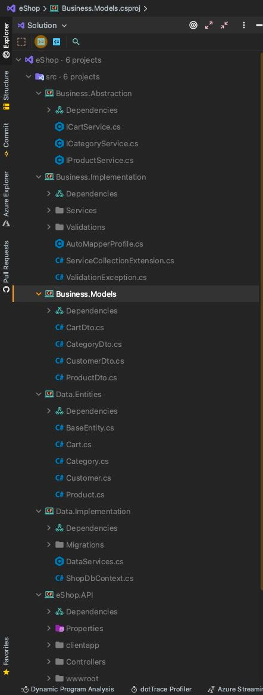
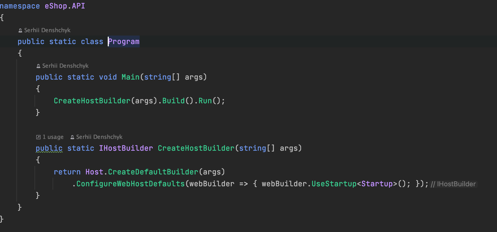

Тема: УСПАДКУВАННЯ. АБСТАКТНІ КЛАСИ. ІНТЕРФЕЙСИ
Мета: Придбати практичні навички роботи з роботою з інтерфейсами та абстрактними класами та механізмом спадкування.
- Постановка задачі:
- 1. Доповнити програмну реалізацію інтерфейсами та абстрактними класами.
- 2. Реалізувати методи та механізми спадкування.
Наведемо повну діаграму класів нашого застосунку

Наведемо діаграму варіантів використання нашого застосунку

Наведемо діаграму станів нашого застосунку

Наведемо діаграму послідовності нашого застосунку

Наведемо діаграму компонентів нашого застосунку

Використання абстрактних класів та інтерфейсів
Інтерфейс - це синтаксична структура, яка визначає відносини між об'єктами, які поділяють певний набір і не пов'язані яким-небудь іншим чином. При проектуванні класів розробка інтерфейсу ідентична розробці специфікації (багато методи повинні бути реалізовані кожним класом, що використовують інтерфейс, за винятком випадку токен-інтерфейсів в деяких мовах програмування).
Інтерфейси, поряд з абстрактними класами і протоколами, встановлюють взаємні зобов'язання між елементами програмної системи, що є основою концепції контрактного програмування. Інтерфейс визначає межу взаємодії між класами або компонентами, визначаючи конкретну абстракцію, яка виконується реалізує стороною.
Використання механізму спадкування
Визначення нового класу може базуватись на визначенні вже існуючого. В такому випадку, новий клас отримає властивості та поведінку базового класу, та доповнить їх своїми власними. У випадку одиничного успадкування, у кожного класу може бути лише один безпосередній базовий клас. У випадку множинного успадкування, дозволяється існування декількох безпосередніх надкласів. Представником мови, яка має явне множинне успадкування є C++. Оскільки при множинному успадкуванні виникає ряд проблем, тому у таких мовах, як наприклад D, Java, C# дозволяють явно тільки просте (одинарне) успадкування. У разі необхідності, у даних мовах множинне успадкування можна реалізувати за допомогою інтерфейсів. Застосування механізму успадкування дозволяє покращити повторне використання коду шляхом використання вже визначених властивостей та методів (поведінки) базових класів.
Файлова структура проекту

Програмний код з використанням абстрактних класів та інтерфейсів
Програмний код з реалізацією механізмом спадкування абстрактних класів та інтерфейсів

Код классу Program
Код классу StartUp


Папка з проектом
Завантажити папку з проектомЗапуск ехе-файла
Завантажити програмуВисновки
В цій лабораторній роботі ми здійснили вивчення та впровадження в наш програмний продукт механізму спадкування та використання абстрактних класів та інтерфейсів. Також вивчили теоретучну базу щодо ціх питань та навели її в цьому документі.